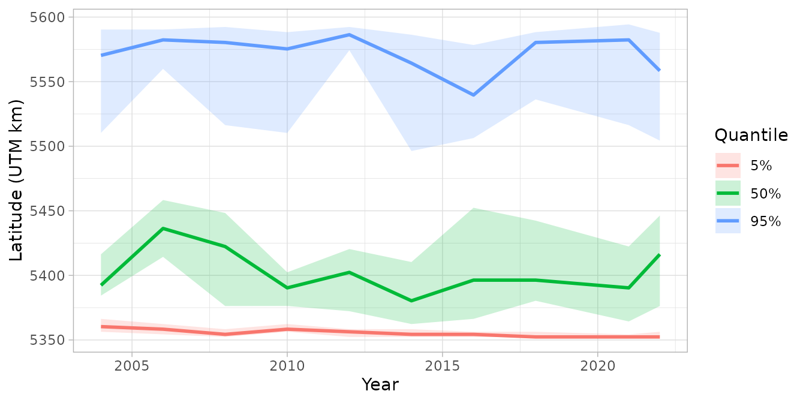
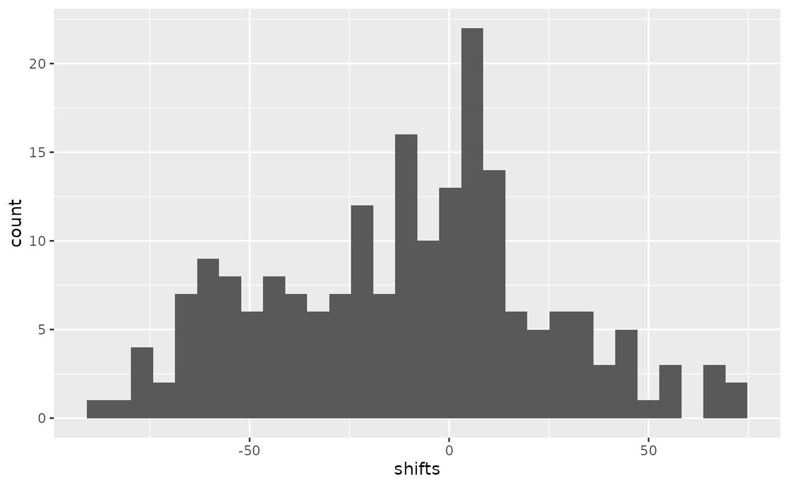

If the code in this vignette has not been evaluated, a rendered version is available on the documentation site under ‘Articles’.
Introduction
Range edges are useful metrics for understanding species
distributions and how they change over time. The
get_range_edge() function calculates range edges as
density-weighted quantiles along a spatial axis (e.g., latitude,
longitude, or depth). This approach follows methods used in Fredston et
al. 2021 from VAST.
Range edges are calculated by:
- Ordering spatial locations along a user-specified axis
- Calculating the cumulative proportion of total density along that axis
- Finding positions where the cumulative proportion equals target quantiles
- Using simulation from the joint precision matrix to quantify uncertainty
In this vignette, we’ll demonstrate calculating range edges for Pacific Spiny Dogfish (Squalus suckleyi) along the latitude axis on the west coast of Vancouver Island.
Data
We’ll use the built-in dogfish dataset, which contains
fisheries-independent trawl survey data from the west coast of Vancouver
Island. The data includes catch weights, presence/absence, depth, and
area swept.
glimpse(dogfish)
#> Rows: 1,458
#> Columns: 9
#> $ year <int> 2004, 2004, 2004, 2004, 2004, 2004, 2004, 2004, 2004, 200…
#> $ longitude <dbl> -125.1928, -125.8362, -125.7952, -125.6383, -125.7022, -1…
#> $ latitude <dbl> 48.68167, 48.22183, 48.30733, 48.29017, 48.36000, 48.3645…
#> $ X <dbl> 780.2098, 734.9809, 737.6287, 749.3395, 744.2715, 737.449…
#> $ Y <dbl> 5399.066, 5345.797, 5355.425, 5354.015, 5361.570, 5361.78…
#> $ present <int> 1, 0, 0, 1, 1, 1, 1, 0, 1, 1, 1, 1, 1, 1, 1, 1, 0, 0, 0, …
#> $ catch_weight <dbl> 22.7, 0.0, 0.0, 221.1, 439.8, 48.2, 13.5, 0.0, 47.9, 68.2…
#> $ area_swept <dbl> 0.10288, 0.10288, 0.11574, 0.12217, 0.09645, 0.12217, 0.1…
#> $ depth <dbl> 73, 455, 171, 137, 140, 145, 320, 279, 117, 70, 61, 77, 9…For prediction, we’ll use the wcvi_grid, which provides
a spatial grid covering the survey area:
glimpse(wcvi_grid)
#> Rows: 2,689
#> Columns: 3
#> $ X <dbl> 733.9852, 735.9852, 737.9852, 735.9852, 737.9852, 739.9852, 735.…
#> $ Y <dbl> 5346.334, 5346.334, 5346.334, 5348.334, 5348.334, 5348.334, 5350…
#> $ depth <dbl> 447, 442, 433, 312, 295, 400, 287, 233, 352, 449, 402, 390, 382,…Fitting a spatiotemporal model
First, we’ll construct a mesh for the spatial random effects:
Next, we’ll fit a spatiotemporal model for dogfish density using a delta generalized-gamma family (Dunic et al. 2025). This models the positive catches with a generalized gamma distribution that works well for Pacific Dogfish given their occasional giant outlying catch values. A simpler Tweedie or delta-gamma family could have been used too. We’ll include depth as a predictor using a quadratic effect:
fit <- sdmTMB(
catch_weight ~ poly(log(depth), 2),
data = dogfish,
mesh = mesh,
family = delta_gengamma(type = "poisson-link"),
spatial = "on",
time = "year",
spatiotemporal = "IID"
)
sanity(fit)
#> ✔ Non-linear minimizer suggests successful convergence
#> ✔ Hessian matrix is positive definite
#> ✔ No extreme or very small eigenvalues detected
#> ✔ No gradients with respect to fixed effects are >= 0.001
#> ✔ No fixed-effect standard errors are NA
#> ✔ No standard errors look unreasonably large
#> ✔ No sigma parameters are < 0.01
#> ✔ No sigma parameters are > 100
#> ✔ Range parameters don't look unreasonably large
fit
#> Spatiotemporal model fit by ML ['sdmTMB']
#> Formula: catch_weight ~ poly(log(depth), 2)
#> Mesh: mesh (isotropic covariance)
#> Time column: year
#> Data: dogfish
#> Family: delta_gengamma(link1 = 'log', link2 = 'log', type = 'poisson-link')
#>
#> Delta/hurdle model 1: -----------------------------------
#> Family: binomial(link = 'log')
#> Conditional model:
#> coef.est coef.se
#> (Intercept) 0.17 0.38
#> poly(log(depth), 2)1 -9.28 4.42
#> poly(log(depth), 2)2 -30.68 3.23
#>
#> Matérn range: 54.35
#> Spatial SD: 0.96
#> Spatiotemporal IID SD: 1.31
#>
#> Delta/hurdle model 2: -----------------------------------
#> Family: gengamma(link = 'log')
#> Conditional model:
#> coef.est coef.se
#> (Intercept) 2.71 0.29
#> poly(log(depth), 2)1 -5.53 3.06
#> poly(log(depth), 2)2 -7.98 2.54
#>
#> Dispersion parameter: 1.08
#> Generalized gamma Q: -0.68
#> Matérn range: 86.75
#> Spatial SD: 0.24
#> Spatiotemporal IID SD: 0.46
#>
#> ML criterion at convergence: 5523.459
#>
#> See ?tidy.sdmTMB to extract these values as a data frame.The model shows both spatial and spatiotemporal variation, with depth having a strong relationship with dogfish density.
Making predictions
To calculate range edges, we need to make predictions on a spatial
grid that covers the area of interest. We’ll replicate the
wcvi_grid for each year in the dataset and generate
predictions with simulation:
# Create prediction grid for each year
years <- sort(unique(dogfish$year))
nd <- replicate_df(wcvi_grid, "year", years)
# Make predictions with simulations for uncertainty quantification
# Using nsim = 200 simulations from the joint precision matrix
# larger simulations will be more stable at the expense of speed and memory
set.seed(123)
pred <- predict(fit, newdata = nd, nsim = 200)The predict() function with nsim > 0
returns a matrix where each column represents one simulation draw from
the joint precision matrix.
Calculating range edges
Now we can calculate range edges along the latitude axis (Y
coordinate). By default, get_range_edge() calculates the
2.5% and 97.5% quantiles, representing the lower and upper range edges.
Here, we’ll also add in the median (0.5) to find the center of the
distribution.
edges <- get_range_edge(pred, axis = nd$Y, quantiles = c(0.025, 0.50, 0.975))
head(edges)
#> year quantile est lwr upr se
#> 1 2004 0.025 5360.334 5356.334 5366.334 2.847127
#> 2 2004 0.500 5392.334 5384.334 5416.334 8.386996
#> 3 2004 0.975 5570.334 5510.334 5590.334 22.087935
#> 4 2006 0.025 5358.334 5354.334 5362.334 1.853287
#> 5 2006 0.500 5436.334 5414.334 5458.334 10.086017
#> 6 2006 0.975 5582.334 5559.884 5590.384 9.733245The output includes:
-
year: the time slice -
quantile: the quantile value (0.025 for lower edge, 0.500 for the median, 0.975 for upper edge) -
est: the estimated position along the axis (latitude in this case) -
lwrandupr: 95% confidence intervals for each quantile -
se: standard error for each quantile
Visualizing range edges
We can plot how the range edges change over time:
ggplot(edges, aes(year, est, colour = as.factor(quantile))) +
geom_line(linewidth = 1) +
geom_ribbon(
aes(ymin = lwr, ymax = upr, fill = as.factor(quantile)),
alpha = 0.2,
colour = NA
) +
labs(
x = "Year",
y = "Latitude (UTM km)",
colour = "Quantile",
fill = "Quantile"
) +
scale_colour_discrete(labels = c("5%", "50%", "95%")) +
scale_fill_discrete(labels = c("5%", "50%", "95%")) +
theme_light()
This plot shows how the northern and southern range edges of dogfish have shifted over time, with uncertainty bands reflecting sampling and estimation uncertainty. The median line represents the center of the distribution.
Accessing simulation draws
For custom analyses, you can access the raw simulation draws:
edges_sims <- get_range_edge(pred, axis = nd$Y, return_sims = TRUE)
head(edges_sims)
#> year quantile .value .iteration
#> 1 2004 0.025 5362.334 1
#> 2 2004 0.025 5358.334 2
#> 3 2004 0.025 5358.334 3
#> 4 2004 0.025 5358.334 4
#> 5 2004 0.025 5356.334 5
#> 6 2004 0.025 5362.334 6This returns all simulation draws in long format, which can be useful for:
- Custom uncertainty quantification
- Calculating probabilities of range shifts
- Comparing range edges between models or scenarios
For example, we could calculate the probability that the upper range edge (northern edge) has shifted northward between two time periods:
# Extract simulations for upper edge in first and last year
upper_first <- edges_sims |>
filter(quantile == 0.975, year == min(year))
upper_last <- edges_sims |>
filter(quantile == 0.975, year == max(year))
# Calculate shift for each simulation
shifts <- upper_last$.value - upper_first$.value[match(upper_last$.iteration, upper_first$.iteration)]
# Probability of northward shift
prob_north <- mean(shifts > 0)
cat("Probability of northward shift:", round(prob_north * 100, 1), "%\n")
#> Probability of northward shift: 41 %We can plot that distibution:
ggplot(data.frame(shifts = shifts), aes(shifts)) + geom_histogram()
#> `stat_bin()` using `bins = 30`. Pick better value `binwidth`.
If anything, the northern range has contracted here, which is consistent with previous research on this stock (Ward et al. 2024).
Other axes
While we’ve demonstrated using latitude (Y), range edges can be calculated along any spatial axis. Common choices include:
- Longitude (X): for east-west range shifts
- Depth: for depth range edges (e.g., shallow vs. deep distribution limits)
- Coastal distance: for offshore/onshore distribution patterns
- Temperature: if you have environmental covariates in your prediction grid
Simply provide the appropriate vector to the axis
argument.
References
Dunic, J.C., Conner, J., Anderson, S.C., and Thorson, J.T. 2025. The generalized gamma is a flexible distribution that outperforms alternatives when modelling catch rate data. ICES Journal of Marine Science 82(4): fsaf040. https://doi.org/10.1093/icesjms/fsaf040
Fredston, A. L., Pinsky, M., Selden, R. L., Szuwalski, C., Thorson, J. T., Gaines, S. D., & Halpern, B. S. (2021). Range edges of North American marine species are tracking temperature over decades. Global Change Biology, 27(13), 3145-3156. https://doi.org/10.1111/gcb.15614
Ward, E.J., Anderson, S.C., Barnett, L.A.K., English, P.A., Berger, H.M., Commander, C.J.C., Essington, T.E., Harvey, C.J., Hunsicker, M.E., Jacox, M.G., Johnson, K.F., Large, S., Liu, O.R., Richerson, K.E., Samhouri, J.F., Siedlecki, S.A., Shelton, A.O., Somers, K.A., and Watson, J.T. 2024. Win, lose, or draw: Evaluating dynamic thermal niches of northeast Pacific groundfish. PLOS Climate 3(11): e0000454. Public Library of Science. https://doi.org/10.1371/journal.pclm.0000454